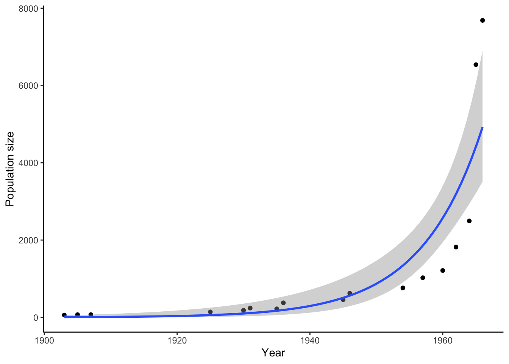

Warning: Using `size` aesthetic for lines was deprecated in ggplot2 3.4.0.
ℹ Please use `linewidth` instead.
DRAFT 20250113
Darwin’s core contribution to science was not just his assemblage of evidence for the pattern of evolution, but also the conception of a mechanism that could explain such patterns: natural selection. In doing so, he formalized an idea that humans have used for millennia to shape traits of agricultural crops, livestock, and companion animals. If you weed out the duds and promote the variants you desire, you end up with giant potatoes, hens that lay over 300 eggs a year, pigs that produce the most scrumptious bacon, and the most adorable puppies that steal your well-bred breakfast.
Humans have been domesticating plants and animals for various purposes for over 10,000 years, thereby shaping their evolution. The recipe for success was relatively simple: assess the traits of individuals in your stock, choose the ones with the desired traits for breeding, and keep doing just that, time and time again. While we—as humans—have a long history of selective breeding, it does not actually take that much time for artificial selection to have profound effects. The speed at which we can domesticate animals was illustrated by an experiment that aimed to better understand the evolution of dogs from wolves by selectively breeding foxes.
In 1959, Lyudmila Trut and Dmitri Belyaev started to selectively breed silver foxes (Vulpes vulpes) in a Russian fur farm (Dugatkin 2018). Breeders were selected based on their tameness. Foxes that were curious toward humans were retained, while those that were shy or even aggressive… well, they became coats for the Russian elite. Over a few decades, foxes in this experiment not only became tamer and tamer, but they also exhibited changes in a variety of other traits: their facial structure diverged, some exhibited floppy ears and curly tails, their coat colors changed, and some even started to make novel sounds (seriously… read about Pushinka the Barking Fox). Today, the foxes of this experiment still contribute to fur production, but you can also buy domesticated foxes as pets, even here in the United States. Selection on an apparently simple trait (tamness) lead to complex changes in the fox population in just a few decades.
Explore More
To learn about the famous fox experiment, check out How to Tame a Fox (and Build a Dog): Visionary Scientists and a Siberian Tale of Jump-Started Evolution by Lee Dugatkin and Lyudmila Trut, or (Dugatkin 2018)The Silver Fox Domestication Experiment by the same first author.
Darwin, through his experience with pigeon breeding, was not only aware of the power of selective breeding and domestication, but he was also able to relate that process to the patterns of evolutionary change he observed in nature. This chapter will take you through Darwin’s logic of natural selection.
Natural selection explains evolution based on first principles; deceivingly simple and equally powerful. Darwin made four key observations, also know as Darwin’s postulates:
Individuals in a population vary in their traits.
Some of that trait variation is inherited from parents to their offspring.
More offspring are produced in every generation than can possibly survive.
Successful survival and reproduction of those offspring is not random but dependent on the traits they inherited from their parents.
If these four observations hold true, then the consequence is that the heritable traits that impact survival and reproduction will change from one generation to the next. Beneficial variants will become more common through time, ultimately causing adaptation to the prevailing environmental conditions.
While we intuitively know at least some of Darwin’s postulates to be true, we should treat them all as hypotheses. We cannot only test whether the predictions of each postulate hold up, but we can also empirically test whether evolutionary change is really the consequence of the four postulates. In the following sections, we will take a closer look at the four postulates and discuss an actual case study of natural selection in the wild, building on what you learned about Darwin’s finches in the last chapter.
Individuals in a population vary in their traits. We know this to be true in humans; if you just look around the classroom, inter-individual differences become evident in many traits. While nearly all humans have one head, two eyes and ears, and five digits on each limb, we vary in body size, the relative proportions of morphological traits, the color of our skin, hair, and eyes, aspects of our physiology, as well as behavioral traits that make up our personalities. If you have ever cared for pets or plants in a garden, you will have some intuition about trait variation in those species, too.
From a practical perspective, the question is not so much whether individuals in a population vary, but which variable traits are actually important from a functional perspective. In other words, what traits should we actually be paying attention to as evolutionary biologists? For example, some humans have hair on their phalanges and some don’t. Does that matter? Probably not… This is where careful natural history observations come into play. To ask meaningful questions about evolution in natural systems, we have to consider organisms as holistic entities consisting of interacting traits in the context of the abiotic and biotic factors comprising their environment. So before going out into natural populations and quantifying variation, we want to formulate concrete hypotheses about the role of specific traits in shaping organismal performance in terms of survival and reproduction.
Once relevant traits for study have been identified, quantifying actual trait variation is not too difficult. It is amazing what ground-breaking data sets were collected merely using a caliper. But depending on the nature of a trait, any other method might be used to quantify inter-individual differences, from the molecular composition of cells all the way up to behavioral responses. Variation of traits among individuals in a population is typically visualized using frequency histograms (like in Figure @ref(fig:beaksizevariation)), and most traits in natural populations exhibit a normal distribution, where most individuals have intermediate trait values, and extreme trait values are more rare. We will explore why this is in Chapter 8.
Ultimately, any variation we can observe and quantify in a population represents the raw material of evolution. Selection can act on variable traits, potentially causing evolutionary change—if said trait is heritable. If there is no variation, there can be no selection and accordingly no evolution, no matter how heritable a trait is.
Once variation in a potentially interesting trait is quantified, we have to test whether trait variation is heritable. Many—if not all—quantitative traits are not only shaped by genes inherited by the parents, but also by environmental factors. For example, a child’s potential to grow tall is dependent on whether their parents were tall (i.e., variation in genes that mediate growth) as well as adequate access to resources during the critical times in development. Similarly, the expression of certain colors in insects, fish, and birds is dependent on access to nutritional precursors and the genetically determined physiological capacity to turn those precursors into pigments deposited in tissues. Genetic and environmental effects work together to shape the variation of traits that we observe. So how can we determine the relative contribution of each?
Heritability measures the degree to which variation in a trait in a population is due to genetic variation. Thus, it is not a metric we can establish for a particular individual or a particular family; rather, we need to quantify the correspondence of parent and offspring traits across multiple families in a population. We can then plot offspring trait values as a function of their parents’ trait values and calculate regression lines. The slope of those parent-offspring regressions is a measure of heritability (in particular, narrow-sense heritability, but we will learn more about this in Chapter 8). If the slope of the parent-offspring regression is close to one, it means there is almost perfect correspondence between parent and offspring traits, and heritability is high (blue line in Figure @ref(fig:herit)). If the slope of the line is close to zero, there is no correspondence between parent and offspring traits; in this case, phenotypic variation is entirely shaped by environmental influences, and there is no heritability (green line in Figure @ref(fig:herit)). Any slopes between zero and one (like the orange line in Figure @ref(fig:herit)) indicate that genetic and environmental factors both contribute to shaping trait variation in a population.
Warning: Using `size` aesthetic for lines was deprecated in ggplot2 3.4.0.
ℹ Please use `linewidth` instead.
Just like variation is required for there to be selection, heritability is required to translate selection into evolutionary change. If there is no heritability in a trait, it cannot evolve. Evolutionary change in a trait is consequently not only shaped by selection, but also by the degree to which the trait is heritable.
All organisms have the potential to produce more offspring than required to replace themselves. Hence, all populations have the potential for exponential growth. We see evidence for such exponential growth whenever we inoculate a Petri dish with bacteria, when invasive species are introduced into a new area, or when pathogens spread through a population of susceptible hosts. But eventually, exponential growth comes to an end when resources get more scarce and competition intensifies. Nutrients on the agar will dwindle, invasives gradually encroach on all available spaces, and hosts either die off or develop immunity. Resource limitation and competition ultimately stifle exponential growth, and thus, natural population growth is typically density-dependent, which can be described using logistic growth cruves. During logistic growth, a carrying capacity sets the threshold beyond which positive population growth becomes impossible, because the resources to sustain additional population growth are not available.
Darwin was not the first to recognize the relationship between population growth and resource availability. In fact, he was inspired by an earlier economist, Thomas Malthus, who voiced concerns in the late 1700s about the growth of agricultural food production lagging behind human population growth. Although the industrial and agricultural revolutions proved Malthus wrong (global food production largely kept pace with human population growth), he was right about one thing: the growth of any population can only continue if its resources grow as well. Hence, most natural populations remain relatively stable through time despite the potential for exponential population growth (Figure @ref(fig:elephants)), aside from comparatively minor fluctuations across seasons and years.

So where do all the extra offspring go? They die! Most individuals born succumb to a lack of resources, predators, or diseases long before they reach sexual maturity, and only a small fraction of offspring born in any generation survive long enough to reproduce. The consequence of this overproduction is fierce competition in every generation. This competition is what Darwin referred to as the struggle for existence. Natural selection is often particularly intense in populations that are close to their carrying capacity and in populations that are contracting.
Darwin’s final proposition was that winners and losers in the struggle for existence are not determined by chance. Instead, specific traits and trait combinations lead to a higher probability of survival and reproduction. In a landscape plagued by drought, it is the plant with the deepest roots that has the best chance of persisting. In an stream rich in predators, the fish with the fastest escape response is most likely to dodge imminent attacks. In a forest with limited food resources, the parrot with the most efficient foraging strategy can garner enough food resources to produce and feed a clutch of young. Depending on the challenge at hand, individuals with specific traits or trait combinations will have a slight advantage over others.
Importantly, natural selection is not random. That does not mean natural selection is guided by conscious intent, as sometimes is insinuated. Rather, natural selection just happens because some variants have a disproportionate likelihood to survive and reproduce. As a consequence of natural selection’s non-random nature, evolution by natural selection increases adaptation from one generation to the next.
A concept related to natural selection is fitness, which is used to describe the strength of natural selection on different variants. Fitness in biology is not a measure of an individual’s physical prowess or health, but rather the relative contribution of a particular phenotype to the gene pool of the next generation.
Natural selection -a difference on average between survival and fecundity of individuals with certain phenotypes compared with individuals of other phenotypes.
Fitness - The relative ability of individuals to survive and reproduce in its environment. Fitness quantifies individual reproductive success and represents the average contribution to the gene pool of the next (and subsequent) generation(s) by individuals of the specified phenotype in a given environment either via differential survival or reproductive success.
Adaptation - Character that increases the ability of an individual to survive or reproduce better compared with some alternative trait or form of the character; trait that increases fitness relative to individuals lacking that trait.
Preadaptation (exaptation) - Pre-existing character whose function changes to serve a new adaptive purpose.
Maladaptation - a trait or characteristic that decreases the overall fitness of an organism, population, or species, either in absolute terms or relative to an optimal state. It is usually used to describe a trait that has become more harmful than beneficial over time, either due to changing environments or trade-offs with other traits. It contrasts with adaptation, which enhances fitness.
Fitness is relative in the sense that it is typically expressed for one phenotype in relation to another. For example, the fitness of mouse with a dark fur coat is higher relative to the fitness of a mouse with a light fur coat, because the darker coat color increases crypsis against the dark leaf litter of the forest habitat. Fitness is also context-dependent, and the relative fitness of two phenotypes may change depending on the environmental conditions. For example, in a mouse population inhabiting beaches, the light colored phenotype may have higher fitness, because it is better camouflaged against the light sand.
The core strength of Darwin’s postulates is that they can be treated as hypotheses, and we can use data from natural populations to test whether evolution by natural selection is happening. In this section, we will once again retrace the steps of Rosemary and Peter Grant. In Chapter 2, you explored their data on beak size variation of the Geospiza fortis population on Daphne Major Island (Figure @ref(fig:timeseries)). During a massive drought associated with an El Niño in 1977, there was a substantial increase of beak size over a short period of time. But does this change represent an evolutionary change caused by natural selection? If so, we would predict (1) observable variation in beak size in the G. fortis population, (2) that some of the beak size variation is heritable, (3) that the finches on Daphne Major are in fact facing a struggle for existence, and (4) that survival in the finch population is not random but related to beak size. Last but not least, we would also predict differences in beak size across generations.
To test whether there is variation in beak size within the G. fortis population, we can use a frequency histogram to plot raw beak size data collected by the Grants (Figure @ref(fig:beaksizevariation)). As with most quantitative traits, beak size variation follows a normal distribution, with most individuals exhibiting intermediate beak sizes around 9.5 mm. However, the spread in beak sizes is vast; the smallest beaks measured just 6 mm, and the largest ones almost 14 mm. That is more than a two-fold spread! Therefore, there is clear variation in beak size that natural selection could potentially act upon; i.e., we found evidence for Darwin’s first postulate.

To test whether beak size is heritable, the Grants tracked the development of individuals by banding them with unique markers and comparing beak sizes of parents and their adult offspring. Plotting the average beak size of each parental pair against the average beak size of their offspring reveals a clear positive relationship between the two variables, both for families studied in 1976 and 1978 (Figure @ref(fig:heritability)). Parents with large beaks tended to raise chicks with large beaks, and parents with small beaks had chicks with small beaks. The slope of the regression lines for both years is almost 0.9, indicating a high heritability. So, beak size is not only variable but also highly heritable, providing evidence for Darwin’s second postulate.

As with any population that has a capacity for exponential growth and is trapped in a small area, the struggle for existence in Darwin’s finches seems obvious, but election can be particularly strong when conditions are harsh and populations are contracting. Throughout the 1977 drought, finch populations on Daphne Major crashed from about 1,500 birds in March 1976 to to less than 200 birds in late 1977 (Figure @ref(fig:popsize)). This represents a decline of over 85 % in less than two years. The Grants were able to show that this decline was primarily related to a limitation of food resources, as the lack of significant precipitation limited plant growth and seed production on the island. Consequently, the Grants witnessed struggle for existence first hand, finding support of Darwin’s third postulate.

To test whether survival of birds was non-random in relation to beak size, we can compare the beak size distribution in individuals before the drought in 1976 and the birds that were left after the drought in 1978. As you can see in Figure @ref(fig:survival), surviving birds on average had a larger beak size than individuals prior to the selection event. The Grants were also able to explain exactly why a larger beak size conferred a selective advantage. As the drought progressed, there was not only a decline in seed abundance, but the average seed also became larger and harder, because the smaller and softer seeds were eventually all eaten up by the finches. As seed quality changed, finches with larger beaks had a foraging advantage, because they were able to open larger and harder seeds more effectively. The disproportionate survival of individuals with larger beaks provides clear evidence for Darwin’s fourth postulate.

At this stage, we have shown heritable variation in beak size, strong selection caused by a massive drought, and non-random survival associated with beak size. However, we have not yet shown that evolution has occurred. We have only shown the action of natural selection. But testing the hypothesis of evolutionary change requires the documentation of changes across generations, not just differential survival within generations. To do so, we can can compare the beak size of offspring born before the drought (1976) to the beak size of offspring both after the drought (in 1978; these are the offspring of the survivors). As expected, based on the high heritability of beak size, we see that the average offspring in 1978 exhibited a larger beak than the average offspring in 1976 (Figure @ref(fig:evolutionarychange)).
Taken together, these data sets conclusively show that the drastic change in beak size from 1976 to 1978 (Figure @ref(fig:timeseries)) represents evolution by natural selection. The finch population adapted to a new reality, where the average food source was larger and harder. The Grants’ pioneering work linked an evolutionary pattern that they observed to a concrete mechanism that explained the pattern; they documented the interplay of pattern and process in a naturally evolving population.

By following the finch population through time, Rosemary and Peter Grant were able to show evolution by natural selection in action. However, following populations through time is not a trivial effort. An indirect way to investigate the effects of natural selection on trait evolution is to compare different populations of the same species that are exposed to different environmental conditions. Comparing trait distributions among populations can provide insights about the actions of selection, just like a time series.
In its most simplest form, natural selection is a fundamental concept in evolutionary biology that describes the process by which organisms with advantageous traits are more likely to survive and reproduce, passing those traits on to future generations. This was Darwin’s revolutionary concept, a mechanism that could explain the origin of species. So simple and elegant a concept. Yet, as we discussed in the Chapter 5, it would take well over a half century until natural selection was generally accepted as one of the primary drivers of the diversication of life. Even today there remains a lot of misunderstandings on how natural actually works. In this section we will explore and hopefully dispell some of the more lingering misunderstandings concerning the nature of natural selection.
Natural selection acts on individuals, but its consequences are expressed at the population level. Specifically, selection operates on phenotypes, the observable characteristics of organisms. For any one character, if there is variation for a character in a population and that variation results in some individuals able to survive or reproduce better than others in the population with a different value for that character, then the frequency of the favored phenotype will increase in the population. Selection does not change the individual, but simply causes it to increase in frequency in the population. The consequence of selection acting on the individual level (differential survive or reproduction), the impact is on the population level (i.e. changing the frequency of the phenotypic values).
Selection acts on phenotypes, results in changes in allele frequencies. In order for natural selection to be effective across generations, the phenotypic character must be heritable to some extent, i.e. there must be a genetic basis to the variation found in the character in the populations. If true, then any change in the frequency of a heritable phenotype in population will result in changes in allele frequencies at the genes underlying the phenotypic variation within a population over time.
The idea of changes in allele frequencies is very classical way of thinking about this. From a more genomic perspective, the variation does not have be at the gene/allele level (where we formally define a gene as a region of the genome that is transcribed into a functional product). As we learn more about genome anatomies and the genome-phenome connection, we are finding that a lot of phenotypic variation is not necessarily driven by variation at genes in the formal sense, i.e. nucleotide polymorphisms in a protein coding region. Any variation in the genome that influences the character value (phenotype) will increase in frequency, be that an allele (variant form of a gene), a SNP, at a regulatory region, intergenic (between genes), or even a Structural Variant (SV).
So, though we will be discussing various selection models and their impact on allele frequencies, keep the above in mind. We are very loosely defining allele to include most any genomic variation, and not just at the gene level.
Selection depends on the immediate environment of an organism. The environment plays a pivotal role in natural selection, as it provides the context in which selection occurs. Interestingly, organisms can also influence their environment, creating a dynamic interplay between the two. However, natural selection is not a forward-looking process. It is the outcome of differences in survival and reproduction among existing variants in a population at that given moment in time. Natural selection will not select variants because they might prove useful in the future. It is pure here and now, acting on pre-existing variants from yesterday to determine the winners today.
Levels of Selection. While selection acts on individuals, the consequences of selection can result in higher order patterns to a limited extent (e.g. group selection). However, there is no strong evidence that group selection (as formally defined) occurs. Instead, natural section will always work to increase the population fitness by favoring individual organisms with the higher fitness. The consequences of this may look like group selection, but it is not: selection does not act for the good of the population or species. Seemingly altruistic traits or selfless behaviors, which appear to benefit a species or population, actually reflect an increase in a type of fitness referred to as inclusive fitness.
Natural selection does not cause adaptive changes to arise. Instead, it causes adaptive traits to become more frequent in a population, i.e. acts on preexisting variation. Mutations, which are the ultimate source of genetic variation, occur randomly with respect to fitness or necessity. Most mutations are deleterious, some neutral, and every once in awhile advantageous. It is these advantageous mutations that increase in frequency in a population due to natural selection. There is no solid evidence for directed mutation, i.e. specific mutations that purposely occur to benefit an individual.
Despite acting only on pre-existing traits, selection can produce new traits and adaptations. There are various ways new traits can arise. For example:
The combination of variation and natural selection can lead to the evolution of completely novel features. There is no need for large phenotypic changes (saltations) to occur via mutation to explain the origin of completely novel features, though this does not preclude that happening. By acting on pre-existing characters, completely novel characters can arise either slowly over evolutionary time or quite rapidly. There is plenty of evidence for natural selection acting on a pre-existing character, changing it serve a new novel purpose, what we refer to as an exaptation. There is plenty of evidence for exaptations at the molecular level, but we can also find morphological exaptations as well.
Natural selection does not lead to perfection. Adaptations often appear cobbled together and highly inefficient (certainly not something any intelligent designer would come up with if they wanted to keep their job). Natural selection only works on pre-existing variation. Because of the nature of natural selection, a variant form of a character just has to work better (on average) than other versions of the character in a population. If it does, and the variation has a genetic basis, it will increase in frequency in the populations. It just needs to be better, not the best. It does not mean the end result has to be the fastest or strongest or meanest. It just has to work better than others.
There are limitations and constraints on natural selection. It’s important to recognize that there are all manner of limitations on natural selection driven by the fundamental rules of physics and chemistry, and basic biological limitations. These constraints include:
Complexity and Progression. Despite these limitations, natural selection can lead to extraordinary complexity. However, it’s crucial to understand that while selection is nonrandom, it is not necessarily progressive; it does not always lead to greater organismal complexity. If it is beneficial for an individual to lose some characteristic compare to others in the population that retain it, then selection can act on to reduce organismal complexity just as well (consider parasites for example). This does not mean there are no patterns or trends in the evolutionary record. It simply means that there is no driving force toward some a priori outcome. Remember, selection is about the here-and-now, not some preferred outcome.
There is no inherent drive towards balancing nature or achieving harmony or equilibrium.
Ethical Considerations. Natural selection is fundamentally an amoral process (neither moral nor immoral). It simply lacks any ethical qualities. It is often described as a selfish, dark, and aesthetically unappealing process. As such, there are no great moral lessons to be learned from natural selection or the adaptations it drives.
It’s crucial to avoid the naturalistic fallacy (the supposition that what is natural is inherently good) when thinking about natural and how evolution by natural selection works. Natural selection provides no code of ethics, no moral compass, and no justification for behaviors. It merely describes what is, not what ought to be.
Evolution is a natural science. That being the case, explaining how a particular character may be an adaptation requires that we follow the “rule” of natural science, which means developing hypotheses, testing hypotheses and predictions, collecting relevant data, and analyzing and interpreting those data. Simply claiming that a character is an adaptation because you have a story that sounds good is not sound science. Until you can demonstrate empirical data that supports your story, it will still only remain a story regardless of how compelling it sounds.
Recognizing and studying adaptations involves several approaches:
The first two approaches really should be starting points for developing hypotheses and predictions that can be tested using the last two, experimental evidence (both in the field and/or laboratory) and using the comparative method. We will discuss the comparative method later in the OER after we learn a little more about how to interpret and construct evolutionary trees.
In conclusion, natural selection is a powerful yet constrained process that shapes the diversity of life on Earth. Understanding its mechanisms, limitations, and implications is crucial for a comprehensive grasp of evolutionary biology.
In your own words, how do you define fitness? How would you measure fitness in a natural population? Provide a concrete example; i.e., be specific with what organism you have in mind and describe the concrete steps you would take to quantify fitness.
Think about the relation between natural selection and evolution. Can you explain why the presence of natural selection does not necessarily lead to evolutionary change? Can you explain how evolution might happen in the absence of natural selection?
If you look at the time series of beak size data from the Grants (Figure @ref(fig:timeseries)), you can see that after a steep increase in beak size right after the drought, beak sizes slowly decline throughout the 1980s. In fact, beak sizes reach pre-drought levels by the late 1980s. What do you think happened after the drought? Why did beak sizes not continue to increase or remain stable at a larger size?
In The Origin of Species, Darwin said:
“As natural selection works solely by and for the good of each being, all corporeal and mental endowments will tend to progress toward perfection.”
Darwin, 1859
What do you think of this statement? Can you think of reasons why natural selection does not actually lead to perfection?